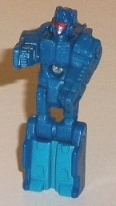
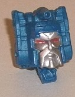
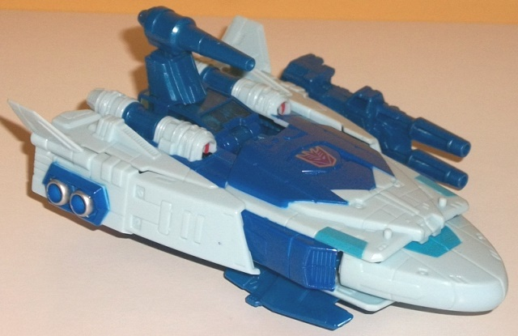
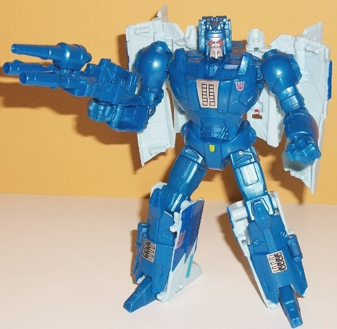

Allegiances
: Decepticon
Size
: Deluxe
Difficulty of Transformation
: Medium
Color Scheme
: Moderately dark milky
blue, light pale "chalky" blue, and some silver, transparent blue, pale
dull yellow, dull aquamarine, red, black, dark glossy blue
Rating
: 7.4


Fracas is the name of
Scourge's Titan Master; in G1 it was the name of Scourge's Targetmaster,
as Scourge never was a Headmaster in G1. In Titan Master mode Fracas has
pretty much the most generic of generic details, with some blocky details
on his legs, body, and shoulders, with more finely-detailed lower arms
with fists. His head is also a lot like many late G1 heads, with a silver
face, a red visor, and a round helmet with antennae. His plastic color
is all the same fairly dark shade of milky blue, which is a pretty decent
color. He does have some dull aquamarine paint on his legs, which is also
an okay color but I wish was a little brighter for some greater contrast,
and the aforementioned silver face & red visor. As with all Titan Masters,
Fracas can move at the head and back-and-forth at the shoulders, hips,
and knees (with the latter two being at one point, as the legs are one
piece). In head mode, he's definitely Scourge's head, with a nicely-detailed
silver bearded face with red eyes, along with Scourge's unique little gun
on top of his head. Unfortunately, because Scourge's head has traditionally
not been that square, the back two-thirds of the head mode sticks out from
the smaller "actual" headsculpt in the front, so Scourge has not made the
transition to a head as well as some of the other G1 bots that weren't
Headmasters before.


Scourge's alternate
mode this time around is much closer to his G1 form than his
original
Generations deluxe
, with "flying soap bar" fitting him a bit more adequately.
That said, a couple of changes have still been made to Scourge to "update"
him a little more and make him look more like a spaceship. Little fin wings
have been added to the rear sides, and he does have a fair amount of details
in this mode-- not a ton, mind you, as he's still pretty aerodynamic, but
a few vents, lines, and other minor details have been added so he looks
less like a soap bar than his G1 toy. There's also some nice silver-and-dark
blue details on the sides that look like some sort of exhaust ports. The
front part is where this mode is the weakest, however-- there's a definite
"elevation change" in between the middle section and the front "nosecone"
section, with the nosecone being definitely lower than the parts directly
behind it. The parts behind it are also a bit more square near the front
than I'd like, and everything around there doesn't "mesh" as well as it
should. There's two leg panels that stick out from the bottom of this mode
too-- they're minor bits, but still visible nonetheless. As for Scourge's
color scheme, he's mostly a very light pale blue in this mode, with a fair
amount of dark blue paint and moderately dark blue plastic showing through
on the top center area in particular. I do wish these two shades of dark
blue were more exactly matched, though-- they're JUST different enough
where it's easily noticeable. There's also some dull aquamarine near the
front to break up the light blue a bit more, along with some silver along
the sides. That said, beyond the silver everything's a shade of blue--
I would've liked a bit more silver or something to break up all the blue.
A Titan Master can fit in the cockpit near the center rear of this mode,
which has transparent blue windows. You can stick on a little one-barreled
gun on the top of the cockpit to mirror Scourge's gun back there on his
G1 toy, and Scourge also has a double-barreled blaster that is fitted so
a Titan Master can sit in it, as well. Unfortunately, the double-barreled
gun doesn't quite fit in the 5mm port for it in the center, due to the
interference of the leg plates right in front of it, so if you want it
to fit in snugly you have to plug it in one of the silver holes on the
sides, which makes Scourge look asymmetrical if you want everything stored.
Finally, there's two little pegs for a Titan Master to stand on in this
mode, both on top of the front, near each side.
Scourge's transformation
is pretty simple-- you basically just unfold his vehicle mode from the
sides out, then unfold his legs and push them up into the main body and
fold out the fists. (And of course, you attach the head, but that's a given
for any Titans Return toy.) Speaking of the head, for some reason Scourge's
head connection isn't quite as stable as the vast majority of Titans Return
figures-- it doesn't outright fall out, but it does wiggle around a little
when you're playing with the figure, which is a minor annoyance. Anyways,
Scourge's proportions are largely pretty good in this mode, and mirror
his G1 cartoon proportions fairly well, with mostly round details and fairly
minimal mold detailing, given the "futuristic" look of him. The "shell"
of most of his vehicle mode sits behind his back and arms, but it moves
at enough points where it doesn't get in the way, and Scourge has traditionally
had a cape, so I don't mind it-- I actually think it makes him look more
individualistic. There are a few minor issues I have with this mode, however--
first, the lower arms are completely hollow because the fists fold out
of them, though unfortunately that's becoming a more and more common occurrence
with TFs lately. The legs proportionally are okay, but they seem... backwards.
The heels are shaped like feet, and the feet, shaped like heels. It also
just seems like the light blue sides should be facing forwards instead
of the dark blue panels, but apparently not. And speaking of the dark blue,
that's my other issue with this mode-- Scourge's "core" robot mode is ENTIRELY
that moderately dark milky blue plastic. No other colors are prominent
on his main body, with the light blue only being on his cape and on the
sides and back of his lower legs. There aren't a whole lot of paint apps
to break up the blue, either-- besides the head, there's a couple of silver-and-black
paint apps that look like sticker decals (but aren't) on his chest and
his lower legs, and he's got a small yellow paint app on his pelvis. Other
than that, he's allll blue. As for articulation, Scourge can move at the
neck, shoulders (at two points), elbows (at two points), inwards slightly
at the wrists, and at the hips (at three points) and knees. Given that
the cape behind him is pretty light, that means he can get into a pretty
good number of poses.
Titans Return Scourge
has a few nice improvements made to his vehicle mode compared to his G1
toy, and his proportions are pretty good in both modes. However, he desperately
needs more paint in robot mode, his vehicle mode doesn't fit as seemlessly
together as it should, his legs look backwards, and although he's still
a pretty okay toy, his original Generations toy was better in pretty much
every respect. If you want a Scourge, I'd definitely get that earlier toy
instead.
Review by Beastbot